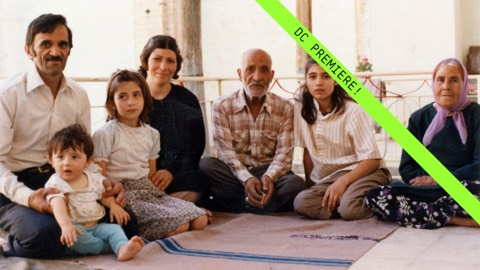
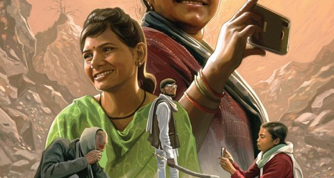

Middle East & South Asia
From the Gulf and the Levant to Afghanistan and India.
25 films · 14 sessions · 93 people
Often together with: War, conflict & the militaryMigration & bordersReligionLegal & safety for reportersChildren & educationDocumentary craft
Films
 Killing AnnaSam Benstead2026 · 76 min
Killing AnnaSam Benstead2026 · 76 min
Rehearsals for a RevolutionPegah Ahangarani2026 · 95 min RescueSine Plambech2026 · 90 min
RescueSine Plambech2026 · 90 min The Secret Reading Club of KabulShakiba Adil, Elina Hirvonen2026 · 95 min
The Secret Reading Club of KabulShakiba Adil, Elina Hirvonen2026 · 95 min- All Static & NoiseDavid Novack2023 · 102 min
- One BulletCarol Dysinger2023 · 90 min
- The Lost Souls of SyriaStéphane Malterre2023 · 99 min
- The Night DoctrineMauricio Rodriguez-Pons, Almudena Toral2023 · 16 min
- The Smallest PowerAndy Sarjahani2023 · 6 min
 RetrogradeMatthew Heineman2022 · 95 min
RetrogradeMatthew Heineman2022 · 95 min FleeSPOTLIGHT: Flee2021 · 90 min
FleeSPOTLIGHT: Flee2021 · 90 min The Pegasus projectLaurence Topham2021 · 4 min
The Pegasus projectLaurence Topham2021 · 4 min
Writing With FireRintu Thomas, Sushmit Ghosh2021 · 93 min 'Til Kingdom Come‘Til Kingdom Come2020 · 76 min
'Til Kingdom Come‘Til Kingdom Come2020 · 76 min- MayorDavid Osit2020 · 89 min
 Bikram: Yogi, Guru, PredatorEva Orner2019 · 86 min
Bikram: Yogi, Guru, PredatorEva Orner2019 · 86 min Desert OneBarbara Kopple2019 · 108 min
Desert OneBarbara Kopple2019 · 108 min The CaveFeras Fayyad2019 · 90 min
The CaveFeras Fayyad2019 · 90 min Angels Are Made of LightJames Longley2018 · 117 min
Angels Are Made of LightJames Longley2018 · 117 min- How We ChooseAlexandria Bombach2018 · 15 min
 Of Fathers and SonsTalal Derki2018 · 99 min
Of Fathers and SonsTalal Derki2018 · 99 min- We Became FragmentsLuisa Conlon, Hanna Lane Miller, Lacy Jane Roberts2018 · 14 min
 End of TruthEric Matthies, Tricia Todd2017 · 58 min
End of TruthEric Matthies, Tricia Todd2017 · 58 min Fire at Sea (Fuocoammare)Gianfranco Rosi2016 · 108 min
Fire at Sea (Fuocoammare)Gianfranco Rosi2016 · 108 min- DroneTonje Hessen Schei2015 · 80 min
Sessions
- 2026 · Fri Nov 6 · 2:45pmPanelDX Academy Masterclass: The Making of The Oligarch and the Art Dealer and Rescue, with Andreas DalsgaardAndreas Dalsgaard, Sig Libowitz
- 2024 · Thu Nov 7 · 4:00 PMConversation · DX²Into the Deep Blue: A Conversation with the Outlaw Ocean ProjectIan Urbina, Ben Blankenship, Sig Libowitz
- 2024 · Sat Nov 9 · 10:00 AMWorkshopWorkshop: Backpack Journalism for FilmmakersBill Gentile
- 2022 · Fri Oct 14 · 10:00 AMPanel · DX²Facing GoliathHamza Syed, Byron Hurt, Jennifer Baichwal, Nathan Halverson, Amanda Pike, Kathy Davidov
- 2022 · Thu Oct 13 · 11:30 AMPanel · DX²Reframing RepresentationRintu Thomas, Patricia Aufderheide, Sushmit Ghosh, June Cross
- 2021 · Thu Oct 14 · 4:00pmPanelAfghanistan in CrisisCharles M. Sennott, David Cowan, Shoaib Fakhruddin, Kirshma Sharifi, Beth Murphy, Victoria Baranetsky
- 2021 · Thu Oct 14 · 9:30amPanel · DX²Documenting the DocumentersNina Alvarez
- 2021 · Wed Oct 13 · 9:45amPanelHARDBALL SEASONJames Harkin, Tiffany Sia, Laurent Richard, Drew Sullivan, Pádraig Hughes
- 2021 · Fri Oct 15 · 11:30amPanel · DX²Staying Safe: Identifying, Understanding, and Preparing for RisksCaitlan Coleman, Margaux Ewen, Thomas Durkin
- 2020 · Wed Oct 14 · 12:30pmPanel · DX²Building a Culture of Safety for the Next Generation of Filmmakers and JournalistsThomas Durkin, Diane Foley
- 2018 · Fri Oct 12 · 4:15 PMConversationClosing Conversation: Journeys Across the Abyss in Print and ScreenJames Longley, Shannon Service, Janet Reitman
- 2018 · Fri Oct 12 · 4:15pmPanel · DX²Journeys Across the AbyssShannon Service, Janet Reitman, James Longley
- 2017 · Thu Oct 19 · 10:30 AMPanelProtecting Sources & Subjects in a (Newly) Hostile EnvironmentLyric Cabral, Laura Handman, Sonia Kennebeck, Brian Knappenberger, Mike Thomson
- 2016 · Fri Oct 7 · 1:45 PMPanelSpilling the Secrets of Secrecy JurisdictionsElisabeth Bumiller, Jake Bernstein, Catherine Dunn, Marina Walker Guevara, David LeLoup
People most involved
- James LongleyPanelist, filmmaker · 2018

- Shannon ServicePanelist, filmmaker · 2018
 Sig LibowitzModerator, panelist, workshop leader · 3 editions, 2024–2026JHU AAP Graduate Film and Media Program
Sig LibowitzModerator, panelist, workshop leader · 3 editions, 2024–2026JHU AAP Graduate Film and Media Program- Thomas DurkinPanelist · 2 editions, 2020–2021
- Tonje Hessen ScheiFilmmaker · 2015
- Tom BlantonPanelist · 2015
- Sabrina BuchwalterPanelist · 2015

- Scott ShanePanelist · 2015
- Gianfranco RosiFilmmaker · 2016

 Eric MatthiesFilmmaker, moderator, panelist · 3 editions, 2017–2021
Eric MatthiesFilmmaker, moderator, panelist · 3 editions, 2017–2021- Tricia ToddFilmmaker · 2017
- Alexandria BombachFilmmaker · 2018
- Luisa ConlonFilmmaker · 2018
 Hanna Lane MillerPanelist, filmmaker · 2 editions, 2018–2025
Hanna Lane MillerPanelist, filmmaker · 2 editions, 2018–2025- Lacy Jane RobertsFilmmaker · 2018
- Talal DerkiFilmmaker · 2018
- Barbara KoppleFilmmaker · 2019
- David AaronFilm subject · 2019
- Kevin HermeningFilm subject · 2019
- Wade IshimotoFilm subject · 2019
- John LimbertFilm subject · 2019
- Michael MetrinkoFilm subject · 2019
- Gerald RafshoonFilm subject · 2019
- James Q. RobertsFilm subject · 2019
- Ed SeiffertFilm subject · 2019
- Cyntia SeiffertFilm subject · 2019
- Feras FayyadFilmmaker · 2019
 Eva OrnerFilmmaker · 2 editions, 2019–2021
Eva OrnerFilmmaker · 2 editions, 2019–2021- Sarah AnthonyFilmmaker · 2019